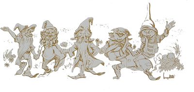
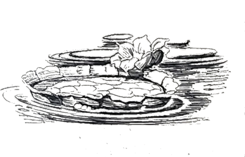
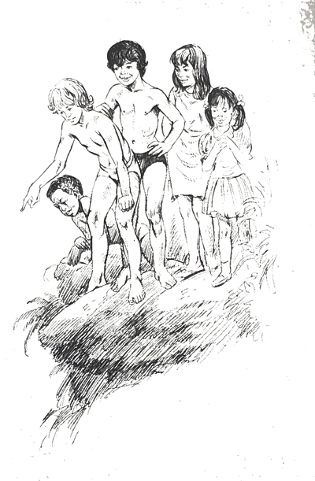
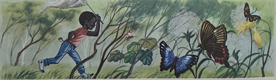
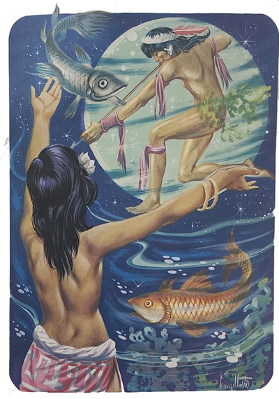
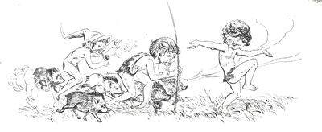
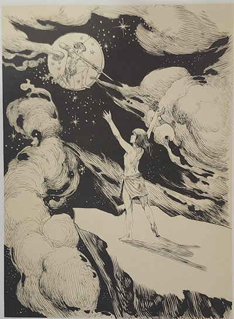

Depois de apagar cuidadosamente a fogueira, ajudado pelas crianças, o Arrelia levantou-se:
- Bem “criançauda”, acho melhor nós andarmos um pouco para esticar as pernas, hein? Perto daqui tem uma lagoa muito bonita e talvez a gente consiga algum peixe para o almoço. Os que gostam de pescar podem aprontar as varas. Se pescarmos alguma coisa faremos um belo almoço. Acho que não há nada mais gostoso do que peixe preparado na hora. É daqui!
Num instante as crianças empunharam as varas de pesca e os outros apetrechos.
- Tudo pronto? – surpreendeu-se o Arrelia. Então vamos indo. Vamos caminhar com atenção para não nos perdermos. Com a floresta não se brinca. Quando menos se espera ... não se sabe mais voltar. Também há o perigo das cobras... Muita atenção portanto. Cuidado também com os anzóis, que podem prender-se em alguém.
A turminha seguiu alegremente, rumo à lagoa. O Arrelia puxava a fila, abrindo caminho a golpes de bengala quando o mato se fechava. Depois de uns dez minutos, pararam à beira da lagoa. O Arrelia exclamou entusiasmado:


- Olhem que lagoa “boniuta”!
- Que beleza, Arrelia! Que beleza! É linda! – gritou Jaci pulando de contente.
- Vocês não esperavam encontrar tanta “beleuza” na floresta, esperavam? Isto aqui é bem diferente da cidade. Notaram que desde a nossa chegada não nos preocupamos com o relógio?
É verdade! O meu até está parado! Esqueci de dar corda! – exclamou Sérgio fitando o seu relógio.
- Viram? Diante da grandiosidade da Natureza, as coisas que julgamos importantes na cidade, tornam-se “pequeunas”. Bem, vamos começar a pescaria. Já estou ficando com fome.
- Eu também! – disse Iberê apertando o estômago.
- Agora façam silêncio senão os peixes fugirão daqui! – pediu Arrelia com o dedo nos lábios.
Depois de algum tempo, ele sussurrou:
- Hum... Pelo jeito o lugar não está muito bom. Nenhum peixe belisca!... Eles são danados de espertos! Na certa perceberam que nós somos da cidade e deram o fora.
É Arrelia. Não pegamos nada. Nem tem sinal de peixe! – respondeu Carlinhos com ar de desânimo.
- Vamos procurar outro lugar – resolveu Arrelia. A lagoa é bem grande e deve haver algum peixe. Não é possível! Venham! Vamos mais para lá
Deram uma grande volta e pararam no lugar que o Arrelia achou mais indicado:
- Agora sim. Estou com o palpite de que aqui pegaremos pelo menos um peixão. Vamos fazer silêncio.
Marisa quebrou o silêncio:
- Arrelia, Arrelia! Olhe! O que é aquilo?
Que foi? Onde? Pensei que houvessem pegado algum peixe!
- Ali! Olhe!
- Ah! Já sei! Você está assustada com aquela planta! É a vitória-régia. É mesmo “maravilhousa”!
Como é grande! E que flor bonita! – admirou-se Jaci.
- É, não tem dúvida. Mas falem baixo ou não teremos peixe para o almoço. Vocês por certo ainda não conheciam a vitória-régia. Ninguém a havia visto antes?

Não. Ninguém a havia visto antes. O Arrelia continuou:
- É considerada a rainha das flores aquáticas. A gente a encontra na Amazônia, em Mato Grosso e também nas Guianas. É cultivada nos jardins botânicos de muitos países por ser considerada uma planta realmente preciosa. As folhas maiores podem suportar perto de quarenta quilos de peso! Vejam a flor que diferente!
- Como será que nasceu? Como pode ser tão grande, Arrelia? – interrogou Carlinhos.
- Aqui na selva há coisas tão fora do comum que nem dá para imaginar. Só mesmo vendo. Agora, os índios sabiam explicar o nascimento da vitória-régia.
- Conte, Arrelia! Como foi? – disse Iberê olhando para a enorme planta com espanto.
- Esperem! – pediu o Arrelia. Parece que o Carlinhos pegou um peixe! E não deve ser pequeno! Vamos ajudá-lo senão em vez de tirar o peixe, ele é que vai entrar na água!
Formou uma confusão terrível. O Arrelia comandava:
- Vamos! Força! Aí vem ele! Que baita peixe! Só esse dá para a mistura de hoje! Vamos embora que estou com fome e ainda precisamos preparar o almoço. Vocês estão com fome?
Todos confirmaram.
- Então vamos – completou o Arrelia e, levando o peixe, começou a caminhar.
A volta foi toda ocupada por comentários a respeito do peixe. Mal chegaram ao acampamento, o Arrelia ordenou:
Mão à obra! Vamos acender o fogo e começar o trabalho! Já estou com água na boca só de pensar nesse peixe!...

O peixe foi atacado por todos os lados, limpo, preparado e jogado na panela. Depois do tempo necessário, esperado por todos com impaciência, o almoço foi arrumado. O Arrelia arregaçou as mangas, preparando-se para a batalha:
Tudo pronto? Então vamos atacar que o ar daqui dá uma fome que não é brincadeira.
Depois de umas valentes dentadas, ele lembrou-se:
- Ah! Vocês queriam saber como nasceu a vitória-régia, não é? Aquela planta “boniuta” lá da lagoa! Uma vez algumas crianças índias também quiseram saber. Foi assim:
Estava fazendo uma noite muito quente. O luar era tão claro que se enxergava quase como se fosse de dia. Perto da lagoa onde estivemos pescando habitava uma importante tribo de índios, a qual hoje não existe mais. Entre os índios havia um velho chefe que era sempre procurado pelas crianças, que gostavam de ouvir estórias.
Como a noite estava quente e o luar muito lindo, o velho cacique havia-se sentado rente da lagoa para descansar e gozar aquela “beleuza”. Logo que as crianças descobriram que ele estava ali, foram sentar-se perto dele. Pediram-lhe que lhes contasse uma estória. O cacique, porém, estava tão distraído admirando a vitória-régia que não havia percebido a chegada das crianças. Custou para que ele saísse daquela contemplação. Por fim sorriu para as crianças e uma delas lhe perguntou:
- O que o senhor estava vendo com tanta atenção?
- Aquela estrela! Aquela bonita estrela – respondeu o cacique apontando para a vitória-régia.
As crianças ficaram admiradas e uma deu para a outra um olhar significativo. Então a vitória-régia era uma estrela? Pobre cacique!
Ele percebeu o espanto das crianças e disse-lhes:
- Não tenham medo! Não fiquei doido, não. Não acreditam que a vitória-régia seja uma estrela? Então ouçam:
Faz muitos e muitos anos. Nem sei quantos. Vivia em nossa tribo uma índia, muito moça e muito bonita, a quem haviam contado que a Lua era um guerreiro forte e poderoso. A moça apaixonou-se por ele e não quis casar-se com nenhum dos moços da tribo. Não fazia outra coisa senão esperar que a Lua surgisse. Aí então punha os olhos no céu e não havia mais nada. Só o poderoso guerreiro. A índia acabou ficando cansada de ver as outras pessoas de sua tribo e muitas vezes ela desandava a correr pela floresta, com os braços erguidos, procurando agarrar a Lua que brilhava tão formosa!


Todos da tribo tinham pena da índia. Tinham pena de vê-la dominada por um sonha tão louco.
E o tempo foi passando. Contudo, o sonho não deixava em paz a pobre moça. Queria ir para o céu. Queria transformar-se numa estrela, numa estrela tão bonita que fosee admirada pela Lua. Mas a Lua continuava distante, desprezando o desejo da moça.
Quando não havia luar, a jovem permanecia aborrecida em sua maloca sem falar com ninguém. Eram inúteis os esforços dos amigos e parentes para que ela ficasse como as outras moças. Continuava recolhida, silenciosa, até a Lua aparecer. Então seguia correndo para a floresta, com os braços erguidos procurando alcançar o céu, a Lua.
Uma noite em que o luar estava mais bonito do que nunca, transformando em prata a paisagem da floresta, a moça repetiu sua tentativa. Chegando à beira da lagoa, viu a Lua refletida no meio das águas tranquilas e acreditou que ela havia descido do céu para banhar-se ali. Finalmente ia conhecer o famoso e poderoso guerreiro.

Sem hesitar, a moça atirou-se às águas profundas e nadou em direção à imagem da Lua. Quando percebeu que havia sido ilusão, tentou voltar mas as forças lhe faltaram e morreu afogada.
A Lua, que era, como eu disse, um guerreiro forte e poderoso, uma espécie de deus, viu o que havia acontecido e ficou compadecida. Sentiu remorso por não ter transformado a formosa índia em uma estrela do céu. Agora era tarde. A moça ia pertencer para sempre às águas profundas da lagoa. Porém, já que não era possível torná-la uma estrela do céu, como a pobre tanto desejara, podia transformá-la numa estrela das águas. Uma flor que seria a rainha das flores aquáticas.
E assim a formosa índia foi transformada na vitória-régia. À noite, essa maravilhosa flor se abre, permitindo à Lua que a ilumine e revele sua impressionante beleza.
O Arrelia fez uma pausa e finalizou:
- E foi assim que nasceu a vitória-régia. Segundo os índios, é claro. A gente nem sabe dizer qual é mais bonita: se é a lenda ou a flor.
